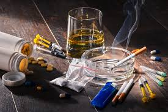
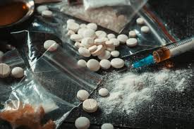

La drogue détruit des vies.
La drogue peut sembler être une échappatoire, mais elle entraîne rapidement une dépendance qui détruit la santé physique et mentale.
Elle altère le cerveau, diminue la lucidité et pousse souvent à des comportements dangereux.

La drogue altère les capacités mentales et la mémoire.
La drogue altère profondément les capacités mentales,
perturbant la concentration, la mémoire et le raisonnement.
À long terme, elle peut provoquer des troubles psychologiques graves,
une perte de repères et une diminution significative des performances intellectuelles et sociales.
Une consommation répétée entraîne une forte addiction.
Une consommation répétée entraîne une forte dépendance,
modifiant progressivement le comportement, la volonté et le jugement.
À long terme, l'addiction peut détruire les relations familiales,
provoquer l'isolement social et compromettre gravement l'avenir personnel et professionnel.

La drogue fragilise le corps et réduit l'espérance de vie.
La drogue affaiblit progressivement l'organisme,
endommageant les organes vitaux et le système immunitaire.
À long terme, elle augmente considérablement les risques de maladies graves,
de complications médicales et réduit significativement l'espérance de vie.